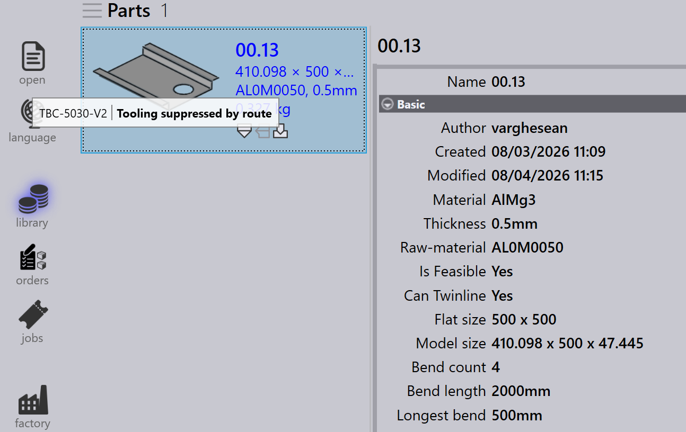

Percorsi
In base alla licenza, TruSmartCAM disporrà di un set predefinito di macchine CAM e configurazioni di instradamento. È possibile personalizzare queste configurazioni per adattarle ai propri flussi di lavoro di produzione specifici.

Nella pagina dei percorsi, le macchine sono rappresentate come stazioni di lavorazione, ciascuna identificata da un’immagine e da un nome.
I percorsi collegano le stazioni, mostrando i possibili percorsi del flusso di lavoro che un componente può seguire dall’inizio alla fine. È possibile visualizzare le proprietà di una stazione passando il mouse sopra la stazione.
Facendo clic su una stazione si apre un pannello con informazioni dettagliate su quella stazione, incluso il nome, il tipo e lo stato di disponibilità.
-
Per modificare la disponibilità della stazione, fare clic sulla stazione e attivare la casella di controllo Enabled nel pannello.
Esporta/Importa configurazioni di instradamento
La funzione Export/Import consente agli utenti di salvare le configurazioni di instradamento correnti e di applicarle ad altri progetti o istanze.
Esportare i percorsi CAD
Fare clic su Export CAD routes… per salvare tutte le regole delle condizioni di percorso correnti in un file CSV.

Il file CSV elenca i materiali e le relative condizioni di instradamento. Le colonne rappresentano i nomi delle macchine e le condizioni (ad esempio, Material, SpecialTool, HasBend, MaxBendLength). Un valore di 1 indica l’instradamento verso una macchina; una cella vuota indica nessun instradamento.
È possibile modificare questo file CSV e reimportarlo nel sistema.
Importare i percorsi CAD
Utilizzare Import CAD routes… per applicare un file CSV modificato.
| Prima di importare, eseguire Reset CAD routes per cancellare le configurazioni esistenti. |
Il sistema legge il file e aggiorna le condizioni di percorso. Le regole possono includere condizioni come HasBend e MaxBendLength.

Se HasBend = 1, la regola si applica ai componenti con piegature.
Se MaxBendLength =1, la regola limita ulteriormente in base alla lunghezza
della piegatura più lunga del componente.
Il componente 00.13 ha una piegatura più lunga di 500 mm. Corrisponde alla prima regola, quindi TBC-5030-V2 viene escluso.

Reimpostare i percorsi CAD
Utilizzare Reset CAD routes per cancellare tutte le configurazioni esistenti prima di importare un nuovo file CSV.
| Se si importa senza reimpostare, le vecchie regole potrebbero entrare in conflitto con quelle nuove. |